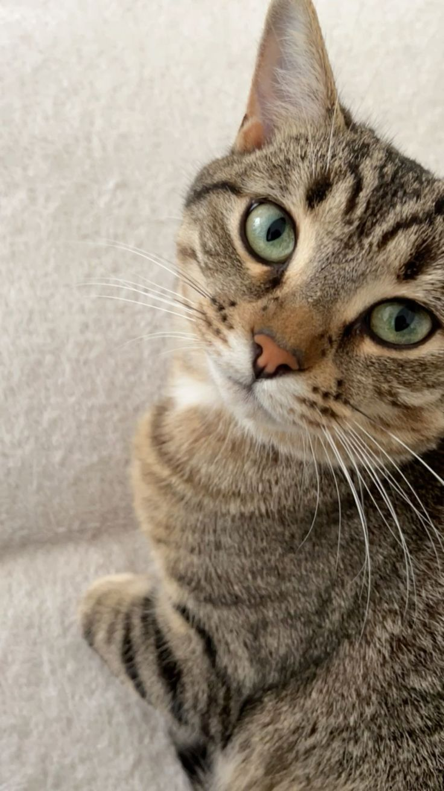

¿Cómo puedes colaborar?
Muchos animales necesitan apoyo para tener una vida más saludable y segura. Puedes contribuir donando productos útiles para su alimentación, descanso e higiene.
Alimentos para mascotas
- Alimento seco para perros.
- Alimento seco para gatos.
- Alimento húmedo para mascotas.
Accesorios y comodidad
- Mantas limpias y camas en buen estado.
- Platos para agua y comida.
- Transportadoras para mascotas.
Productos de limpieza
- Bolsas para recoger desechos.
- Arena para gatos.
- Toallas limpias.
- Productos de limpieza aceptados por el centro.

La solidaridad transforma vidas
No necesitas donar grandes cantidades. Compartir lo que puedas y ayudar a difundir la campaña también contribuye al bienestar animal.